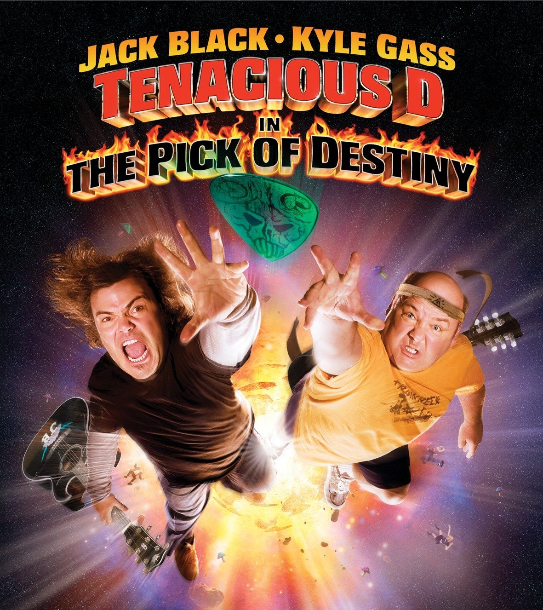

Nacido en Ohio, 1969 A los 12 se mudó a Virginia con su madre tras la separacion de sus padres. Alli comenzó a formar sus primeras bandas de rock gracias a su influencia por el Punk.
Formación
Thomas Jefferson High school.
Bishop Ireton High school.
Annandale High school.
Clases de guitarra.
A los 12 formó sus primeras bandas, inspirado el en el Punk.
Experiencia laboral
Bandas:
Nirvana (1990-1994)
Foo Fighters (1994-Actualidad)
Probot (2004)
Them corooked them crooked vultures (2009)
Colaboraciones y trabajos destacados
Queens of the stone age: Songs for the deaf (album, 2002)

Tenacious D: The Pick of destiny (pelicula, 2006)